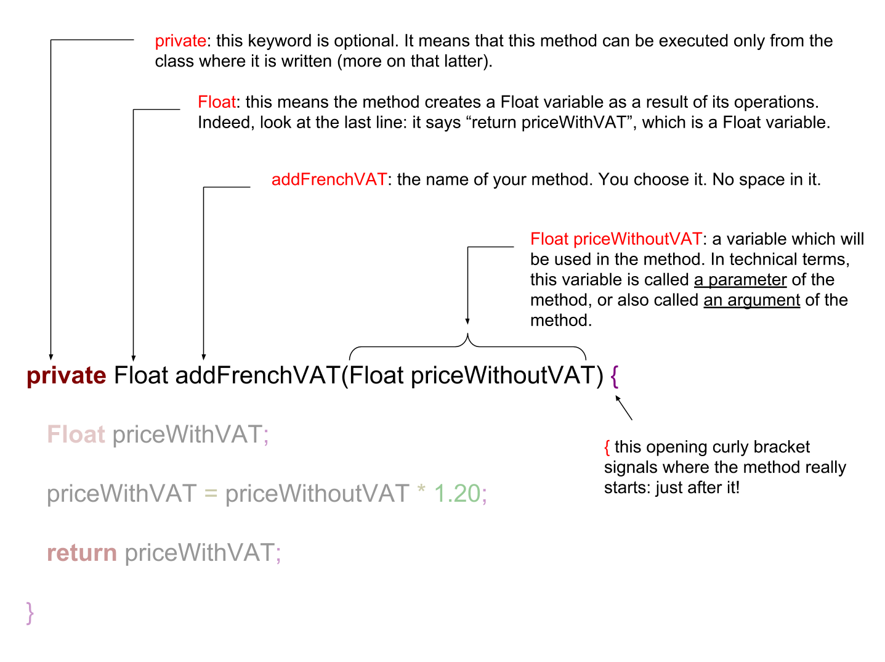
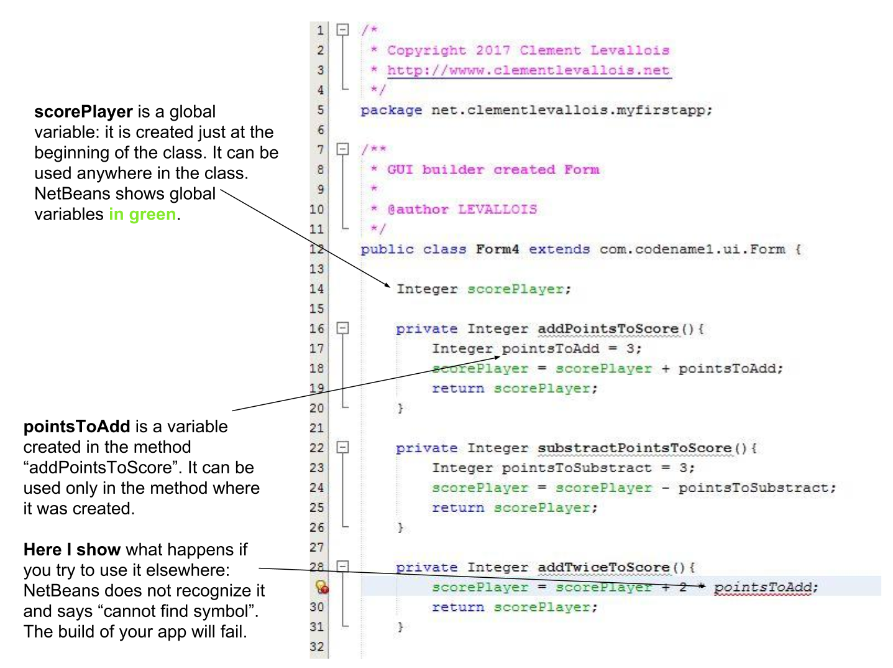

Float priceItemInEuros;
priceItemInEuros = 5.99f; (1)CODAPPS
Classes and methods
'Escape' or 'o' to see all sides, F11 for full screen, 's' for speaker notes
1. Beyond variables… we need methods and classes to create our app!
In the previous lesson we discovered variables, comparing them to the ingredients of a recipe: the basic stuff we need to create an app.
All good, but should we just open an empty text file and write these variables? Just like a cake does not get created just with wheat and eggs, our app needs more than variables to be created!
What we miss here is:
methods (also called functions). Just like "baking", "mixing", "adding milk"… we need to write code describing what the app does.
classes. Classes are a bit like the "kitchen worktop": a place where we will write our variables and methods in a clean and orderly way - good chefs work in well organized kitchens!
2. Methods: to make your variables "do something" in your app
Let’s create an Integer variable representing the price of an item, as we discussed in the previous lesson:
Creating a variable to store the price of an item
| 1 | don’t forget the f next to the number, so that is is indeed recognized as Float. |
Ok, this priceItemInEuros is the ingredient of our recipe. We might need to use it in many ways in our app:
convert its price in Yuan
add the VAT to it
add the price of this item to the total price of the items in the basket of the customer
show it on the screen of our app
etc…
Each of this action is a method. A method needs first to be defined (created), then only it can be applied.
a. Defining a method
How does one create or define method? Let’s create one that adds the French VAT to the price of the item:
Creating a method adding the VAT to the price of an item
private Float addFrenchVAT(Float priceWithoutVAT) { (1)
Float priceWithVAT; (2)
//the regular rate of the VAT in France is 20% so we multiply the price by 1.20 to find the new price (3)
priceWithVAT = priceWithoutVAT * 1.20; (2)
return priceWithVAT; (2)
}(4)| 1 | title of the method you create, then the method start at the opening curly brace {. |
| 2 | the method itself |
| 3 | an explanation, not some code! The line starts with // to show this is some explanations for humans like you and me, not some code in our app. |
| 4 | this closing curly brace signals the end of the definition of the method. |
The first line (title of the method) is pretty intimidating, the rest is pretty clear. So let’s have closer look:

Figure 1. Explaining the title of the method
The three lines inside the method itself are pretty simple:
The three lines of the method
private Float addFrenchVAT(Float priceWithoutVAT) {
Float priceWithVAT; (1)
priceWithVAT = priceWithoutVAT * 1.20f; (2)
return priceWithVAT; (3)
}(4)| 1 | create a Float variable that will contain the price with VAT |
| 2 | assign the value priceWithoutVAT * 1.20f to it (the f means this number is a float - a decimal)
== ! |
| 3 | "Return" means that the method is finished and gives back a result, here: a Float variable which is the price with VAT. |
| 4 | Don’t forget the closing curly brace } when finishing the definition of a method. |
b. Executing a method
We have defined a method called addFrenchVAT which takes a Float variable as parameter (the price without VAT), and returns a price with VAT.
Defining a method does nothing in itself, a bit like a recipe does nothing as long as nobody uses it. How do we use a method?
If the method was defined in the same file where we are coding, then it is very simple:
Executing a method
Float priceItemInEuros = 5.99f; (1)
Float priceItemsInEurosWithVAT; (2)
priceItemsInEurosWithVAT = addFrenchVAT(priceItemInEuros); (3)| 1 | don’t forget the f next to the number, so that is is indeed recognized as Float. |
| 2 | we create a variable that will store the price of our item, including the VAT. |
| 3 | we assign a value to priceItemsInEurosWithVAT. Which one? The value returned by the method addFrenchVAT. |
The variable priceItemsInEurosWithVAT should now contain the value 7.188 (5.99 multiplied by 1.20).
Your turn!
Create a method called "addVAT" and which takes a price for paramter, and returns a price with VAT
Then apply this method to a variable named price which has 5.99 for value
Here is the solution (and read the note below):

Figure 2. Creating a method and applying it
A note on the interactive exercise: it is not easy nor comfortable to write a method on the interactive console…
So if you find it difficult, this is normal. You will need time and practice to get used to this logic.
The good news is, it is much easier to write our code in NetBeans, because we have a lot of help showing where we might have forgotten to close a parenthesis ) or a ; …
This is what we are going to learn now, but just before that we just need to see a last thing about methods:
c. The case of methods which don’t return a result
We need to see a case where methods perform an action, but don’t return anything.
Let’s define such a method:
Creating a method which returns nothing
Float price = 5.99f; (1)
private void addFrenchVAT() { (2)
price = price * 1.20f; (3)
} (4)| 1 | we have created a variable named price |
| 2 | now we define a method like the one before in this lesson, except that: |
| 1 | the method does one thing: it multiplies the value of the variable price by 1.20 (don’t forget the f in 1.20f to say it’s a float!) |
| 2 | this is the end of the method. There is no "return" statement. |
Now, if we want to apply this method, we can just write:
addFrenchVAT();and this will have for effect to multiply the value of the variable price by 1.20.
You will sometimes find lines of code like the one we just saw:
strangeWordFollowedyEmptyParentheses();Then remember it is probably a method that impacts some variables somewhere else in the code, without returning a variable.
Ok, this was quite dense but we are almost there. Now, we are going to see how to organize the ingredients (the variables) and the cooking instructions (the methods) in our recipe (our app!).
where to write code?
how does one part of the code affects another?
3. Classes: to code in an organized and methodical way.
Writing code is like cooking: you can do it in the small kitchen of your apartment, by improvising as you go, or you can do it in in the big kitchens of a large restaurant, with a team of cooks and a strict organization about who does what.
Different programming languages have different "styles of cooking":
most allow you to "cook as you go": just open an empty text file, write the variables you want, create your methods, then write another line of code to run your methods, and you’re launched! But that can be messy.
other programming languages oblige you to have what is called an "object-oriented" way of cooking: it is a style where you need to classify your code in smaller, different parts, according to some strict rules. This is less fun for beginners, but it leads to writing some code which is easier to understand and work with in the long term.
The language we use in this course is called Java, and is famous for imposing an "object-oriented" way of coding.
"Object-oriented" programming can be complex and intimidating, and there are full courses and books devoted to the topic. But if we learn it for a simple project, that’s quite simple.
There are just 2 principles we need to understand:
The code we write must be written inside classes (classes are just files, so this one is easy)
These classes can act as variables
If you understand these two principles you’re good to code!
a. The code is written inside "classes"
A class is just a file in your app. It contains the variables and the methods that you want.
When you created a Form named Form1 for your app in module 2, it created a file called Form1.java, where you can write stuff:

Figure 3. What is a class - simply a file
One of the most powerful consequences of this is for the organization of variables:
Let’s imagine you create 2 Forms: Form1 and Form2.
You want to create 2 Buttons: one in Form1, one in Form2
Like this:
Button myButton = new Button();somewhere in Form1 andButton myButton = new Button();somewhere in Form2Is your code going to be a mess because when you change
myButtonin Form1, the program things you also meanmyButtonin Form2?No: the 2 buttons are clearly separated in 2 different classes, so you are fine.
(this kind of details might seem trivial to you, and it is! But 90% of headaches in coding come from struggling with these small issues).
A last important note on variables:
if I create a variable
Integer scoreat the top of the class, it is called a "global variable" and it can be used anywhere in the class, including inside methods.but variables created inside methods exist only inside the method where it was created.
To illustrate:

Figure 4. The scope of variables
What we just discussed about "can a variable created here be used there" is called the scope of the variable. It can be a tricky subject but you got the essentials.
b. Classes need to be instantiated
Ok, that’s the hardest part to figure. What does this even mean?
Simply: let’s forget the cooking metaphor and take the metaphor of a car: the code written inside a class (the variables, the methods…) is your car, ready to drive.
Instantiating the class is like turning the ignition key and running the engine.
Like this:
Instantiating a class to use it
Form4 myForm; (1)
myForm = new Form4(); (2)
myForm.addTwiceToScore(); (3)| 1 | Form4 is the class where my code is. I create a variable called "myForm". Form4 is the type of my variable |
| 2 | I instantiate this variable: I create a new instance of it. |
| 3 | Now I can use / run / execute the code inside my file Form4.java, by writing: myForm.xxxxx |
Let’s provide an example. Do you remember the code we put in MyApplication.java to show the Form we created at the start of our app?
Instantiating a Form in MyApplication.java
public void start() {
Form1 myForm1 = new Form1(); (1)
myForm1.show(); (2)
}| 1 | We instantiate our Form |
| 2 | And now we can use methods of this Form. Here, we use the method show() which has for effect to display the Form on screen. |
Another common way to instantiate an object is this one:
Getting the present time and storing it in a variable
public void start() {
LocalTime timeNow = LocalTime.now(); (1)
}| 1 | This stores the time at the moment when this line of code is executed, in the variable timeNow |
c. … but not always: static methods
In some cases, you don’t want or don’t need to go through the instantiation step. For example:
you can create 2 Buttons and set the text on them:
Creating 2 buttons
Button button1 = new Button();
button1.setText("press me");
Button button2 = new Button();
button1.setText("click me");But what if you need to have a setting common to all buttons?
For example, having the text of all buttons in CAPITALIZED letters, whatever the text?
To achieve this effect, the creators of the class Button added a static method to their code: a method which applies to all buttons which will be instantiated.
And you use it like this:
Using a static method
Button.setCapsTextDefault(true);Notice that the button is not instantiated (there is no new Button()). The method setCapsTextDefault is ran directly from the class Button (don’t forget the capital B here), and will apply to all future Buttons that you will instantiate.
You can create such methods yourself just by adding the keyword static in front of the title of your method.
Each time you see a line of code looking like Example.method(), this means a static method of the class Example is being used.
The most famous example of a static method is this one:
Showing something in the console
System.out.println("oh hey!");This line will write "oh hey" in the console of your app.
But we discuss here some technical details that will make much more sense when we will actually code an app.
You just finished an important lesson on the fundamentals of coding, congratulations!
Don’t hesitate to come back often and re-read it, it is really a fundamental part of the course.
If you feel that some things remain unclear, or could be better explained: just open an issue on Github, it will be a pleasure exchanging with you.
The end
Questions? Want to open a discussion on this lesson? Visit the forum here (need a free Github account).
Find references for this lesson, and other lessons, here.
Licence: Creative Commons, Attribution 4.0 International (CC BY 4.0). You are free to:
copy and redistribute the material in any medium or format
Adapt — remix, transform, and build upon the material
⇒ for any purpose, even commercially.
 This course is designed by Clement Levallois.
This course is designed by Clement Levallois.
Discover my other courses in data / tech for business: http://www.clementlevallois.net
Or get in touch via Twitter: @seinecle